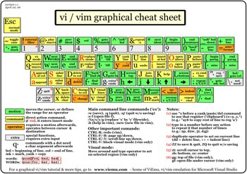
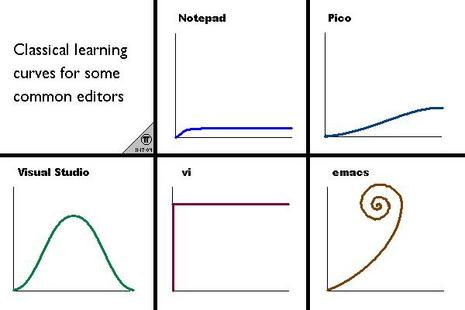
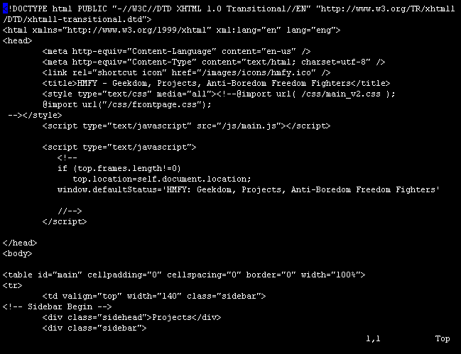

Destaques:
- VI, Vim e venci
- Tutorial do Vim
- Pulando com o Vim
- Seleção VI-sual
- Um vimrc diferente
- Cartão de Referência
Veja também:

Seja bem-vindo(a) ao portal do editor Vim (evolução do VI). Aqui você encontra links para vários artigos e tutoriais para aprender a utilizar o editor, bem como guias mais aprofundados que ensinam a tirar proveito de suas características mais avançadas. E a melhor parte: tudo em português.
Estude com calma, pratique, experimente. Em caso de dúvida, ou se quiser conversar com outros usuários do Vim, junte-se a nós na lista vi-br.
Lá no meu blog eu contei a minha história com o Vim, que começou em 1997 e teve muitos Bip, Bip, Bip até eu aprender a usar o editor direito :)
Mapa de teclas
Excelente mapa visual de todos os comandos do teclado. Bom para imprimir e deixar na mesa, facilitando a consulta. Obrigado Rodolfo Faria pela dica.
|  |
| Original em http://www.viemu.com/a_vi_vim_graphical_cheat_sheet_tutorial.html |
Documentação
Meus textos
- Curso Rápido - Vim básico
- Curso Rápido - Vim médio
- Curso Rápido - Vim avançado
- VI, Vim e venci
- Artigo publicado na Revista do Linux, edição 4 (abr/2000). Artigo completo sobre o editor Vim, que conta sua história (VI), demonstra suas qualidades, comenta sobre as doações arrecadadas para órfãos de Uganda (África) e explica sua rixa com o editor Emacs. Iniciando pelo uso básico, o artigo evolui para demonstrar várias funções avançadas como seleção vertical, abrir vários arquivos ao mesmo tempo, abreviações, marcas, mapeamentos (macros), programação e configuração.
- Pulando com o Vim
- Artigo publicado na Revista do Linux, edição 49 (jan/2004). Este artigo explica como ganhar tempo usando os vários comandos internos do editor Vim para movimentar o cursor, ao invés de usar as setinhas do teclado. Também são demonstrados os comandos para apagar textos, que dispensam o uso das teclas Delete e Backspace.
- Seleção VI-sual
- Artigo publicado na revista Linux Magazine, edição 2 (out/2004). Este artigo dá várias dicas de uso do modo visual do Vim (VI). O modo visual serve para selecionar textos, podendo ser feito orientado a caracteres, linhas ou colunas. Uma vez selecionado, o texto pode ser recortado, copiado ou alterado. O artigo vai fundo e demonstra técnicas avançadas na seleção vertical (de colunas).
- Um vimrc diferente
- Artigo publicado na Coluna do Aurelio, número 9 (mai/2002). Este artigo é na verdade um arquivo de configuração do Vim, cheio de opções bacanas, que são explicadas nos comentários. Basta salvar este arquivo e lê-lo diretamente no Vim. Os comandos aparecerão em cores, facilitando o entendimento. Experimente!
- Editando arquivos do OpenOffice.org no Vim
- Um artigo que analisa a estrutura de um arquivo .SXW (arquivo do Writer do OpenOffice.org) e ensina como editá-lo utilizando um editor de textos comum como o Vim.
- Editor VI - Guia de Referência
- Material de apoio utilizado no meu curso de VI. Mistura tabelas com descrição de comandos e procedimentos prontos para executar, servindo de referência rápida. É apenas uma página, útil para imprimir e deixar ao alcance da mão.
Outros textos
- Tutorial do Vim traduzido por Marcelo Drudi Miranda
-
Baixe e faça "
vi tutor.pt_BR" - Vim em lições por Geraldo Luís da Silva Ribeiro
- Um artigo completo e de leitura rápida que faz uma passada pelos principais comandos do Vim, dividido em lições curtas. Confira!
- VIM - VI Improved por Ademar Souza Reis Jr
- Um artigo introdutório sobre o Vim, que explica suas diferenças do VI original e fornece dicas de configuração do editor.
- Comandos do Vim por Gustavo Roberto Rodrigues Gonçalves
- Página com uma listagem extensa de comandos e sua descrição.
- Dicas de Vim por Ivan Carlos da Silva Lopes
- Um documento com várias dicas do editor, incluindo dicas avançadas de mapeamento e comandos não tão conhecidos.
- Cartão de Referência por Ivan Carlos da Silva Lopes
- Uma versão texto do refcard da GNU, com correções. Está bem completo, uma ótima fonte de referência e aprendizado.
Ferramentas
- Tutorial online interativo (em inglês)
- Excelente tutorial online, que você acessa direto pelo navegador, não precisa instalar nada. Se você entende inglês e é 100% leigo em Vim, este é o melhor lugar para começar.
- Vim Sandbox
- Uma versão online simplificada do Vim, para você brincar com os comandos básicos. Funciona direto no navegador, ótimo para brincar com os comandos que você acabou de aprender.
Configuração (vimrc)
- .vimrc do Aurelio por Aurelio Marinho Jargas
- Arquivo de configuração comentado, cheio de firulas.
- .vimrc do voyeg3r por voyeg3r
- Arquivo de configuração comentado, com bastante coisas.
- .vimrc do Ivan por Ivan Carlos da Silva Lopes
- Arquivo de configuração bem completo, bastante comentado e didático.
Arquivos de sintaxe
O Vim possui o utilíssimo recurso de colorir trechos de arquivos, seguindo regras pré-definidas. Isso é geralmente utilizado para colorir estruturas de uma linguagem de programação, identificando as palavras-chave, nomes de função, etc. As regras de cada linguagem ficam guardadas em arquivos especiais chamados "Arquivo de Sintaxe".
O usuário pode fazer seus próprios arquivos de sintaxe, para virtualmente qualquer tipo de arquivo, basta saber como descrever ao Vim a estrutura de seu arquivo. Segue uma coletânea desses arquivos especiais, criados por brasileiros.
- txt.vim por Aurelio Marinho Jargas
- Sintaxe para arquivos texto. Ler textos se torna mais fácil e rápido quando números, valores monetários, emails, URLs, citações, trechos entre parênteses e caracteres especiais aparecem em destaque. É exatamente isso que este arquivo faz. Experimente.
- spec.vim por Aurelio Marinho Jargas
- Sintaxe para arquivos .spec, utilizados pelo RPM. O Vim já tem um padrão, mas é muito fraquinho. Este está "bombado" e reconhece todas as estruturas que um .spec pode ter.
- php3.vim por Aurelio Marinho Jargas
- Sintaxe para arquivos PHP3. Este está bem trabalhado, com suporte a temas, podendo mudar toda a configuração de cores apenas definindo uma variável, e até fazer suas próprias definições, de maneira bem fácil.
- pagemaker.vim por Aurelio Marinho Jargas
- Sintaxe para arquivos do PageMaker. O PageMaker 6.5, além do formato compilado, também pode ler/gravar arquivos num formato com marcações (tipo HTML). Este é o arquivo do Vim para colori-lo.
- xlib.vim por Augusto César Radtke
- Sintaxe para "typesets" da Xlib. Nele estão definidas todas as palavras-chave da Xlib do XFree86-3.3.6, que aparecerão coloridas no seu código.
- dic.vim por Gustavo Niemeyer
- Sintaxe para arquivos dicionário do Linuxconf. Identifica e coloriza as estruturas do arquivo de mensagens traduzidas do Linuxconf, diminuindo as chances de erro na tradução.
Para testar e utilizar estes arquivos de sintaxe, basta carregá-lo na edição do arquivo atual, com o comando :source arquivo.vim. Se quiser configurar o Vim para sempre utilizar este arquivo de sintaxe, basta associá-lo com uma extensão de arquivo em seu ~/.vimrc:
au BufNewFile,BufRead *.txt source ~/rota/para/arquivo.vim
Onde .txt é a extensão de arquivos que estamos associando ao arquivo de sintaxe arquivo.vim.
Divirta-se!
Curva de aprendizado

Microsoft Vim

:)

{kind=link}
{kind=link}